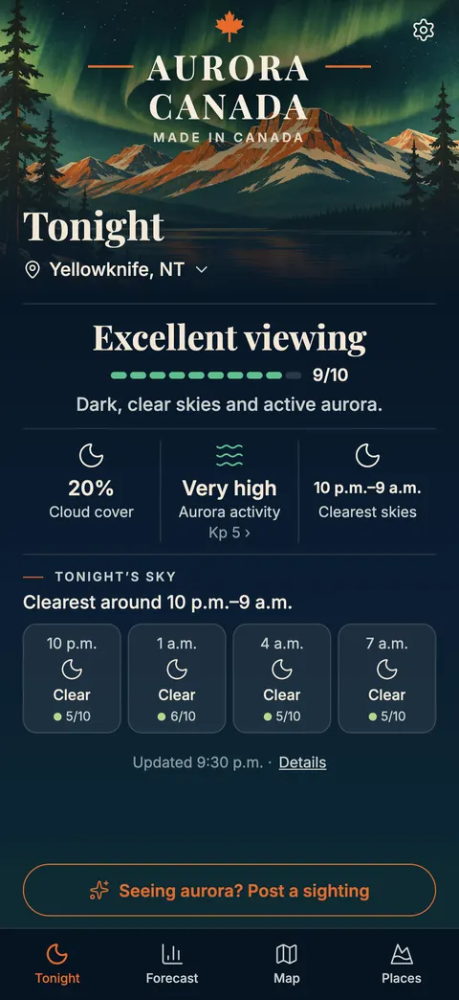
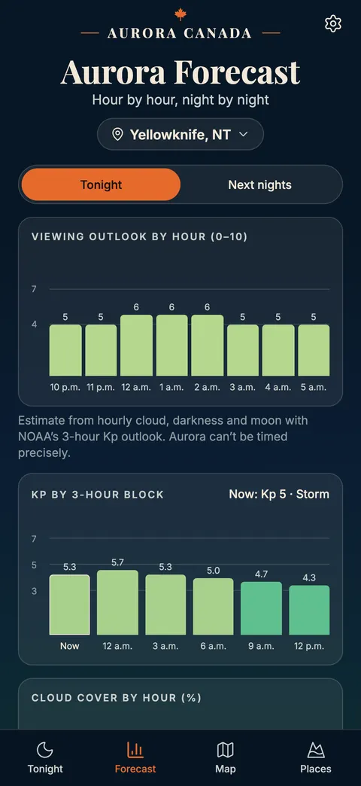
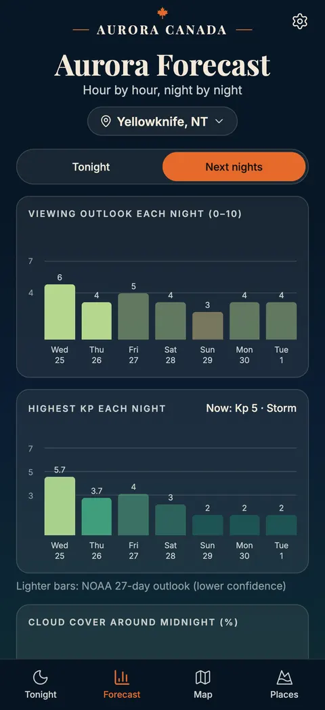
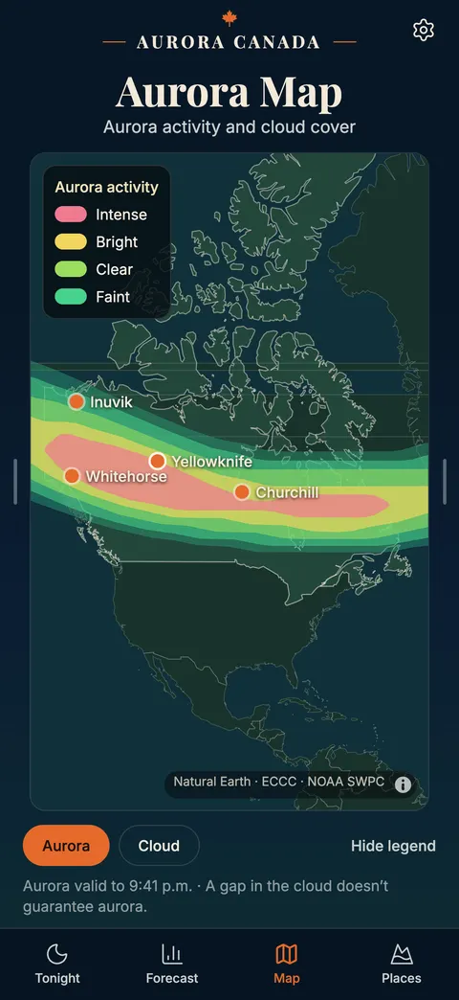
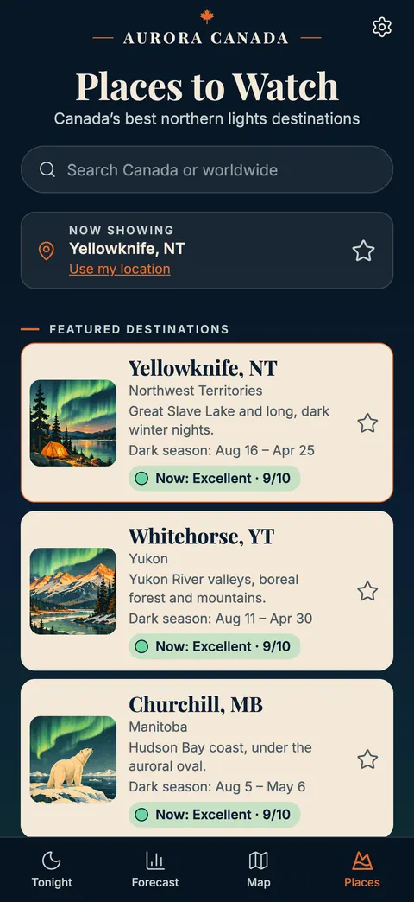
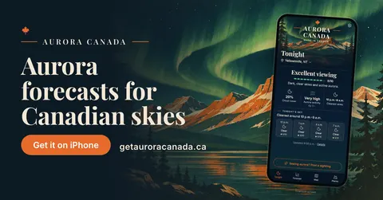
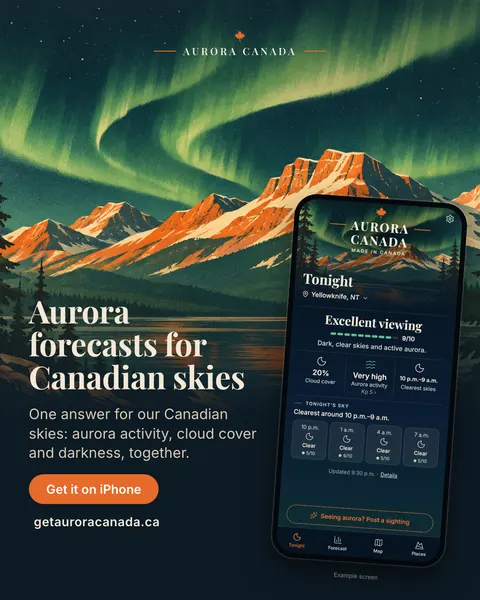

Press kit
Aurora Canada is made in Canada, for Canadian skies: an iPhone app that answers one question in plain words. Is it worth going outside tonight to see the northern lights?
About
Most aurora apps are built around global predictions and aren't made with Canada in mind. Aurora Canada is built for Canadians who live under the northern lights, from Yellowknife and Whitehorse to small towns across the country, and for the visitors who travel to our northern communities to see them. It combines Environment Canada cloud forecasts, NOAA aurora activity, and local darkness and moonlight into one honest rating with the reason, never a made-up percentage. It adds hour-by-hour and next-nights outlooks, a live aurora and cloud map, Canada's best aurora destinations with their dark seasons, and alerts.
Fact sheet
| Maker | An independent Canadian developer |
|---|---|
| Platform | iPhone (Android to follow) |
| Price | Free to download |
| Launch | November 2026, for the 2026–27 aurora season |
| Languages | English, French, Traditional Chinese |
| Data | Environment and Climate Change Canada cloud forecasts; NOAA Space Weather Prediction Center aurora activity; darkness and moonlight calculated on the phone |
| Privacy | No account, no data collected; location rounded to about 1 km |
| Website | getauroracanada.ca |
| @auroracanada.app |
Images
Download everything (ZIP, 9 MB)

Tonight (example of a clear night, Yellowknife)
Forecast, hour by hour
Next nights
Live aurora and cloud map
Places to watch- App icon (maple leaf)
- Alternate app icon (retro)
- Logo, black on white

Banner
Social post


Screenshots show an example of a clear, dark night. Aurora is never guaranteed. Free to use for articles and listings about Aurora Canada.